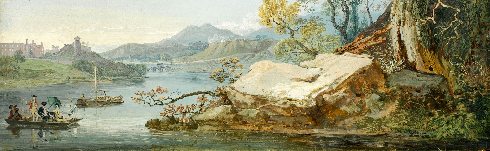
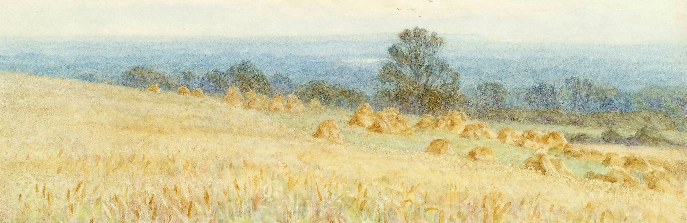

Art Prompts
For those struggling to create art



Art Prompts
For those struggling to create art
This website was designed to help those who wish to create art, but can't think of what to create. I have written a variety of prompts which can hopefully trigger the start of your creativity. While the prompts in each page may be under that specific category, feel free to use them in any type of art. There are also recommendations of other artists given, whose work may be of inspiration to you. There are no limits to art, be as creative as you want!
Image credit: licensed under Pexels
Image credit: licensed under Pixabay
When you struggle with inspiration, motivation, and creativity, it can leave you frustrated or discouraged with art. This is known "art block", which is something many artists go through. I have struggled with it multiple times myself. Sometimes I'd open my sketchbook, ready to draw, only to have that feeling disappear. So what causes this? Why do we suddenly feel this way? I believe that each artist has their own problems, which creates a different story behind their art block. For me, I lacked inspiration. I struggled to form ideas, which led to me being frustrated with myself and art. To overcome this, I stopped pressuring myself to create something big or detailed. Instead, I went back to the basics—sketching simple and freeform shapes. This helped me get back into the flow of drawing again. If you're ever lost with inspiration or frustrated with art, try starting with the basics again. Hopefully, this website can also help you with inspiration.